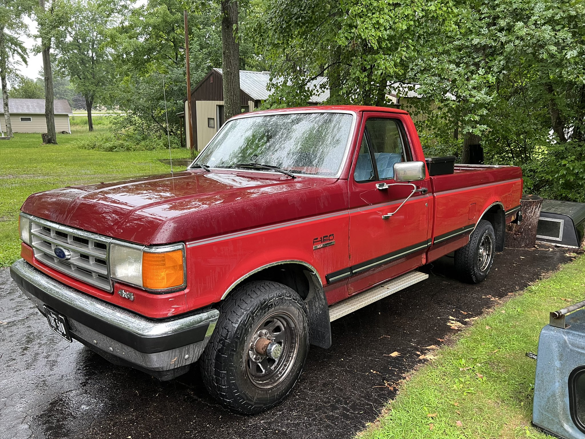

<!DOCTYPE html>
<html lang="en-US"></html>
	<meta charset="UTF-8">
    <head>
		<title>Emerald Lee Tiger - Home Page</title>
		<script src="../scripts/projects_script.js"></script>
        <link href="../stylesheets/normalize.css" rel="stylesheet" />
        <link href="../stylesheets/main.css" rel="stylesheet" />
    </head>
    <body>
        <header>Emerald Lee Tiger - Projects</header>
        <nav class="container">
            <div><a href="../index.html" class="navLink">Home</a></div>
            <div><a href="projects.html" class="navLink">Projects</a></div>
            <div><a href="about.html" class="navLink">About Me</a></div>
            <div><a href="contact.html" class="navLink">Contact</a></div>
        </nav>

		<article>
			<h1 id="projects">Academic Projects:</h1>
				<main class="academicProjects">
				</main>
			<h1 id="projects">Non-Academic Projects:</h1>
				<section>
					<h2>Aurora:</h2>
					
					<p>One of my favorite projects, my 1988 Ford F-150. When I bought this truck, it had quite a lot wrong with it, and over time I have been repairing it.</p>
					<p>In my time of owning the truck, I have discovered that working on older vehicles is no cake walk. It can be difficult to find parts available or even to find documentation such as wiring diagrams. However, the feeling of fixing something successfully and ensuring that a vehicle so old can still be used today is quite a nice one. I plan to soon begin a full restoration on the truck, including rebuilding the engine, doing body work, and rewiring the whole vehicle.</p>
					<p><strong>During the process of restoration, I will be doing several things to the truck, including:</strong></p>
					<ul>
						<li>Cleaning and painting the frame.</li>
						<li>Rebuilding the engine.</li>
						<li>Repairing body damage.</li>
						<li>Rewiring the entire vehicle, top-to-bottom.</li>
						<li>Redoing the interior.</li>
						<li>Installing new equipment throughout the vehicle.</li>
					</ul>
					<p>Much of the work I will be performing will be to make the truck safe, comfortable, and drivable in most any conditions. And the goal with the bodywork is to make the truck look brand new again. It’ll be a lot of work, but I greatly look forward to getting my hands dirty with it.</p>
				</section>
				<section>
					<h2>PipBoy 6400 Mk.I</h2>
					<p>I had another project that I was working on previously, and want to continue working on when I have the time to do so. The PipBoy. Fans of the popular video game franchise "Fallout" will know that this trustly little device is any wastelander's best friend.</p>
					<p>The goal here was to make a fully functioning PipBoy to be worn as a costume prop. I was designing a shell and enclosure for the device in Solidworks, of which the Raspberry Pi 3 computer, along with all of the other electronics, would be housed. When walking around with the PipBoy, the screen would be able to be toggled between the major different sections of information that you can see in the game. This project is currently stalled-out, but I do plan to return to it soon.</p>
				</section>
		</article>

        <footer>
            <p> - Emerald Lee Tiger - <span><address>623 S 6th Ave, Wausau, WI, 54401<br/>&copy; 2023</address></span></p>
            <a href="#top">To Top</a>
        </footer>
    </body>
</html>